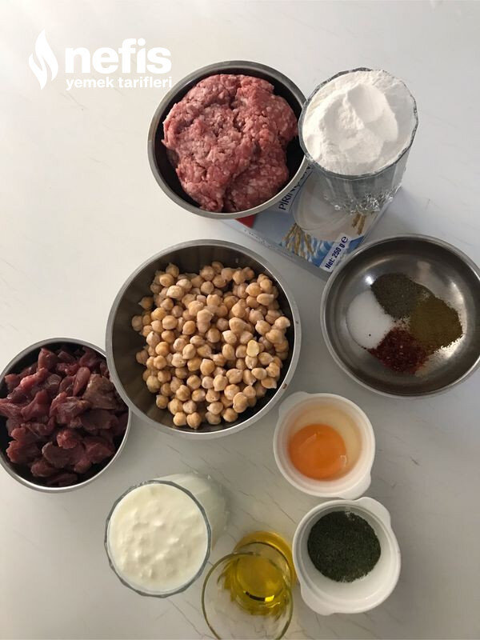

🍽️ 8-10 kişilik⏱️ Hazırlık: 20 dk🔥 Pişirme: 35 dk🏷️ Çorba Tarifleri
Malzemeler
- 250 -300 gram kadar kıyma
- 1,5 çay bardağı pirinç unu
- Tuz
- Karabiber
- Pulbiber ve istediğimiz baharatlar
- 1 fincan kadar su
- Kızartmak için sıvı yağ
- 250 -300 gram kuşbaşı et
- 1 kase haşlanmış nohut
- 1,5 su bardağı yoğurt
- 2 yemek kaşığı un
- 1 yumurta sarısı
- Baharatlar
- Tuz
- 1-2 kaşık tereyağı veya sıvı yağ
- 1 tatlı kaşığı nane
Hazırlanışı
- Önce köfteyi hazırlıyoruz;Pirinç unu, kıyma, tuz ve baharatlar ve 1 fincan kadar su ile köfte hamuru hazırlıyoruz.
- Nohut büyüklüğüne yuvarlıyoruz.
- Köfteler hazırlanınca sıvı yağda kızartıyoruz.
- Eti haşlıyoruz, biraz haşlanınca kaynamış nohutu ilave ederek birlikte kaynatıyoruz.
- Sos malzemelerini hazırlıyoruz;Yoğurdun içine un ve yumurta sarısı ilave edip çırpıyoruz.
- Kesilmemesi için etin suyundan azar azar ilave ederek karıştırıyoruz.
- Baharatlar ve tuz ilave ediyoruz.
- Sosumuzu etli nohuta ilave ederek karıştırıyoruz.
- Köfteleri de ilave ederek karıştırıyoruz.
- Üzerine naneli yağ hazırlıyoruz.